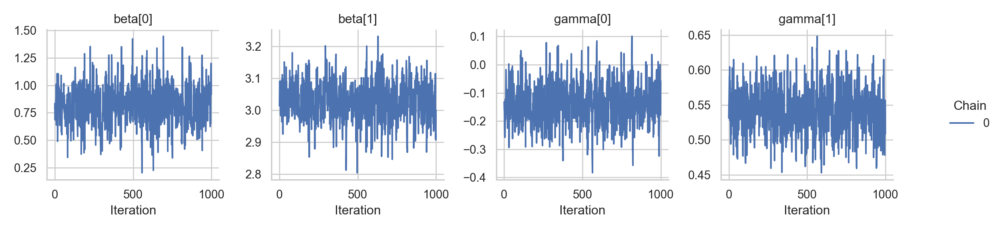

Chapter 3 Location-scale regression
This tutorial implements a Bayesian location-scale regression model within the Liesel framework. In contrast to the standard linear model with constant variance, the location-scale model allows for heteroscedasticity such that both the mean of the response variable as well as its variance depend on (possibly) different covariates.
This tutorial assumes a linear relationship between the expected value of the response and the regressors, whereas a logarithmic link is chosen for the standard deviation. More specifically, we choose the model
\[ \begin{aligned} y_i \sim \mathcal{N}_{} \left( \mathbf{x}_i^T \boldsymbol{\beta}, \exp \left( \mathbf{ z}_i^T \boldsymbol{\gamma} \right)^2 \right) \end{aligned} \] in which the single observation are conditionally independent.
From the equation we see that location covariates are collected in the design matrix \(\mathbf{X}\) and scale covariates are contained in the design matrix \(\mathbf{ Z}\). Both matrices can, but generally do not have to, share common regressors. We refer to \(\boldsymbol{\beta}\) as location parameter and to \(\boldsymbol{\gamma}\) as scale parameter.
In this notebook, both design matrices only contain one intercept and one regressor column. However, the model design naturally generalizes to any (reasonable) number of covariates.
import liesel.goose as gs
import liesel.liesel as lsl
import matplotlib.pyplot as plt
import numpy as np
import seaborn as sns
sns.set_theme(style="whitegrid")First lets generate the data according to the model
rng = np.random.default_rng(seed=13)
n = 500
true_beta = np.array([1.0, 3.0])
true_gamma = np.array([0.0, 0.5])
X = np.column_stack([np.ones(n), rng.uniform(low=0, high=5, size=n)])
Z = np.column_stack([np.ones(n), rng.normal(loc=2, scale=1, size=n)])
y = np.zeros(n)
for i in np.arange(n):
mean = np.dot(X[i], true_beta)
log_sd = np.dot(Z[i], true_gamma)
y[i] = rng.normal(loc=mean, scale=np.exp(log_sd))The simulated data displays a linear relationship between the response \(\mathbf{y}\) and the covariate \(\mathbf{x}\). The slope of the estimated regression line is close to the true \(\beta_1 = 3\). The right plot shows the relationship between \(\mathbf{y}\) and the scale covariate vector \(\mathbf{z}\). Larger values of \(\mathbf{ z}\) lead to a larger variance of the response.
fig, (ax1, ax2) = plt.subplots(nrows=1, ncols=2, figsize=(12, 6))
sns.regplot(
x=X[:, 1],
y=y,
fit_reg=True,
scatter_kws=dict(color="grey", s=20),
line_kws=dict(color="blue"),
ax=ax1,
).set(xlabel="x", ylabel="y", xlim=[-0.2, 5.2])
sns.scatterplot(
x=Z[:, 1],
y=y,
color="grey",
s=40,
ax=ax2,
).set(xlabel="z", xlim=[-1, 5.2])
fig.suptitle("Location-Scale Regression Model with Heteroscedastic Error")
fig.tight_layout()
plt.show()Since positivity of the variance is ensured by the exponential function, the linear part \(\mathbf{z}_i^T \boldsymbol{\gamma}\) is not restricted to the positive real line.
Hence, setting a normal prior distribution for \(\gamma\) is feasible, leading to an almost symmetric specification of the location and scale parts of the model.
The nodes n_beta and n_gamma are initialized with values far away from zero to support a stable sampling process:
n_beta_loc = lsl.Hyperparameter(value=0.0, name="beta_loc")
n_beta_scale = lsl.Hyperparameter(value=10.0, name="beta_scale")
dist_beta = lsl.NodeDistribution(
distribution="Normal", loc=n_beta_loc, scale=n_beta_scale
)
n_beta = lsl.RegressionCoef(
value=np.array([10.0, 10.0]), distribution=dist_beta, name="beta"
)
n_gamma_loc = lsl.Hyperparameter(value=0.0, name="gamma_loc")
n_gamma_scale = lsl.Hyperparameter(value=3.0, name="gamma_scale")
dist_gamma = lsl.NodeDistribution(
distribution="Normal", loc=n_gamma_loc, scale=n_gamma_scale
)
n_gamma = lsl.RegressionCoef(
value=np.array([5.0, 5.0]), distribution=dist_gamma, name="gamma"
)The additional complexity of the location-scale model compared to the standard linear model is handled in the next step.
Since n_gamma takes values on the whole real line, but the response node n_y expects a positive scale input, we transform the Linear Smooth node with a Bijector object, which is placed in between the linear predictor n_scale_linear and the response node n_y:
n_X = lsl.DesignMatrix(value=X, name="X")
n_Z = lsl.DesignMatrix(value=Z, name="Z")
n_y_hat = lsl.Smooth(n_X, n_beta, name="y_hat")
n_scale_linear = lsl.Smooth(n_Z, n_gamma, name="scale_pred")
n_scale = lsl.Bijector(bijector="Exp", input=n_scale_linear, name="scale")
dist_y = lsl.NodeDistribution(distribution="Normal", loc=n_y_hat, scale=n_scale)
n_y = lsl.Response(value=y, distribution=dist_y, name="y")We can now combine the nodes in a model and visulize it
sns.set_theme(style="white")
mb = lsl.ModelBuilder()
mb.add_nodes(n_y)## ModelBuilder([Response(..., name='y'), Smooth(..., name='y_hat'), Bijector(..., name='scale'), ...])loc_scale_model = mb.build()
lsl.plot_model(model=loc_scale_model, width=12, height=8)We choose the No U-Turn sampler for generating posterior samples. Therefore the location and scale parameters can be drawn by separate NUTS kernels, or, if all remaining inputs to the kernel coincide, by one common kernel. The latter option might lead to better estimation results but lacks the flexibility to e.g. choose different step sizes during the sampling process.
However, we will just fuse everything into one kernel do not use any specific arguments and hope that the default warmup scheme (similar to the warmup used in STAN) will do the trick.
builder = gs.EngineBuilder(seed=3, num_chains=4)
# connects the engine with the model
builder.set_model(lsl.GooseModel(loc_scale_model))
# add the kernel
builder.add_kernel(gs.NUTSKernel(["beta", "gamma"]))
# set number of iterations in warmup and posterior
builder.set_duration(warmup_duration=1500, posterior_duration=1000, term_duration=500)
# we use the same initial values for all chains
builder.set_initial_values(loc_scale_model.state)
# create the engine
engine = builder.build()
# generate samples
engine.sample_all_epochs()## INFO - Starting epoch: FAST_ADAPTATION, 75 transitions, 25 jitted together
## WARNING - Errors per chain for kernel_00: 8, 7, 5, 11 / 75 transitions
## INFO - Finished epoch
## INFO - Starting epoch: SLOW_ADAPTATION, 25 transitions, 25 jitted together
## WARNING - Errors per chain for kernel_00: 1, 1, 1, 1 / 25 transitions
## INFO - Finished epoch
## INFO - Starting epoch: SLOW_ADAPTATION, 50 transitions, 25 jitted together
## WARNING - Errors per chain for kernel_00: 2, 4, 1, 2 / 50 transitions
## INFO - Finished epoch
## INFO - Starting epoch: SLOW_ADAPTATION, 100 transitions, 25 jitted together
## WARNING - Errors per chain for kernel_00: 4, 3, 2, 1 / 100 transitions
## INFO - Finished epoch
## INFO - Starting epoch: SLOW_ADAPTATION, 200 transitions, 25 jitted together
## WARNING - Errors per chain for kernel_00: 5, 5, 1, 3 / 200 transitions
## INFO - Finished epoch
## INFO - Starting epoch: SLOW_ADAPTATION, 550 transitions, 25 jitted together
## WARNING - Errors per chain for kernel_00: 4, 2, 6, 6 / 550 transitions
## INFO - Finished epoch
## INFO - Starting epoch: FAST_ADAPTATION, 500 transitions, 25 jitted together
## WARNING - Errors per chain for kernel_00: 4, 4, 3, 4 / 500 transitions
## INFO - Finished epoch
## INFO - Finished warmup
## INFO - Starting epoch: POSTERIOR, 1000 transitions, 25 jitted together
## INFO - Finished epochNow that we have 1000 posterior samples per chain, we can check the results. Starting with the trace plots just using one chain.
results = engine.get_results()
g = gs.plot_trace(results, chain_indices=0, ncol=4)Looks decent although we can see some correlation in the tracplots especially for \(\beta\). Let’s check at the combined summary:
gs.summary(results, per_chain=False)| param_index | num_samples | num_effective | mean | sd | rhat | q_5 | q_50 | q_95 | hdi_90_low | hdi_90_high | |
|---|---|---|---|---|---|---|---|---|---|---|---|
| beta | 0 | 4000 | 1647.78 | 0.831 | 0.176 | 1.003 | 0.549 | 0.83 | 1.121 | 0.555 | 1.126 |
| beta | 1 | 4000 | 1731.873 | 3.024 | 0.059 | 1.002 | 2.927 | 3.025 | 3.12 | 2.929 | 3.121 |
| gamma | 0 | 4000 | 1812.388 | -0.138 | 0.072 | 1.003 | -0.253 | -0.142 | -0.018 | -0.259 | -0.025 |
| gamma | 1 | 4000 | 1847.944 | 0.542 | 0.032 | 1.002 | 0.489 | 0.543 | 0.595 | 0.487 | 0.593 |
Maybe a longer warm-up would give us better samples.
builder = gs.EngineBuilder(seed=3, num_chains=4)
# connects the engine with the model
builder.set_model(lsl.GooseModel(loc_scale_model))
# add the kernel
builder.add_kernel(gs.NUTSKernel(["beta", "gamma"]))
# set number of iterations in warmup and posterior
builder.set_duration(warmup_duration=4000, posterior_duration=1000, term_duration=1000)
# we use the same initial values for all chains
builder.set_initial_values(loc_scale_model.state)
# create the engine
engine = builder.build()
# generate samples
engine.sample_all_epochs()## INFO - Starting epoch: FAST_ADAPTATION, 75 transitions, 25 jitted together
## WARNING - Errors per chain for kernel_00: 8, 7, 5, 11 / 75 transitions
## INFO - Finished epoch
## INFO - Starting epoch: SLOW_ADAPTATION, 25 transitions, 25 jitted together
## WARNING - Errors per chain for kernel_00: 1, 1, 1, 1 / 25 transitions
## INFO - Finished epoch
## INFO - Starting epoch: SLOW_ADAPTATION, 50 transitions, 25 jitted together
## WARNING - Errors per chain for kernel_00: 2, 4, 1, 2 / 50 transitions
## INFO - Finished epoch
## INFO - Starting epoch: SLOW_ADAPTATION, 100 transitions, 25 jitted together
## WARNING - Errors per chain for kernel_00: 4, 3, 2, 1 / 100 transitions
## INFO - Finished epoch
## INFO - Starting epoch: SLOW_ADAPTATION, 200 transitions, 25 jitted together
## WARNING - Errors per chain for kernel_00: 5, 5, 1, 3 / 200 transitions
## INFO - Finished epoch
## INFO - Starting epoch: SLOW_ADAPTATION, 400 transitions, 25 jitted together
## WARNING - Errors per chain for kernel_00: 4, 2, 6, 6 / 400 transitions
## INFO - Finished epoch
## INFO - Starting epoch: SLOW_ADAPTATION, 2150 transitions, 25 jitted together
## WARNING - Errors per chain for kernel_00: 5, 8, 5, 2 / 2150 transitions
## INFO - Finished epoch
## INFO - Starting epoch: FAST_ADAPTATION, 1000 transitions, 25 jitted together
## WARNING - Errors per chain for kernel_00: 7, 4, 6, 6 / 1000 transitions
## INFO - Finished epoch
## INFO - Finished warmup
## INFO - Starting epoch: POSTERIOR, 1000 transitions, 25 jitted together
## INFO - Finished epochresults = engine.get_results()
g = gs.plot_trace(results, chain_indices=0, ncol=4)
gs.summary(results, per_chain=False)| param_index | num_samples | num_effective | mean | sd | rhat | q_5 | q_50 | q_95 | hdi_90_low | hdi_90_high | |
|---|---|---|---|---|---|---|---|---|---|---|---|
| beta | 0 | 4000 | 1853.511 | 0.83 | 0.177 | 1.004 | 0.543 | 0.833 | 1.125 | 0.525 | 1.102 |
| beta | 1 | 4000 | 1825.758 | 3.024 | 0.059 | 1.004 | 2.925 | 3.025 | 3.119 | 2.928 | 3.12 |
| gamma | 0 | 4000 | 1969.058 | -0.136 | 0.074 | 1 | -0.259 | -0.136 | -0.017 | -0.261 | -0.02 |
| gamma | 1 | 4000 | 2039.625 | 0.541 | 0.033 | 1 | 0.488 | 0.541 | 0.596 | 0.49 | 0.598 |
Not really ðŸ˜